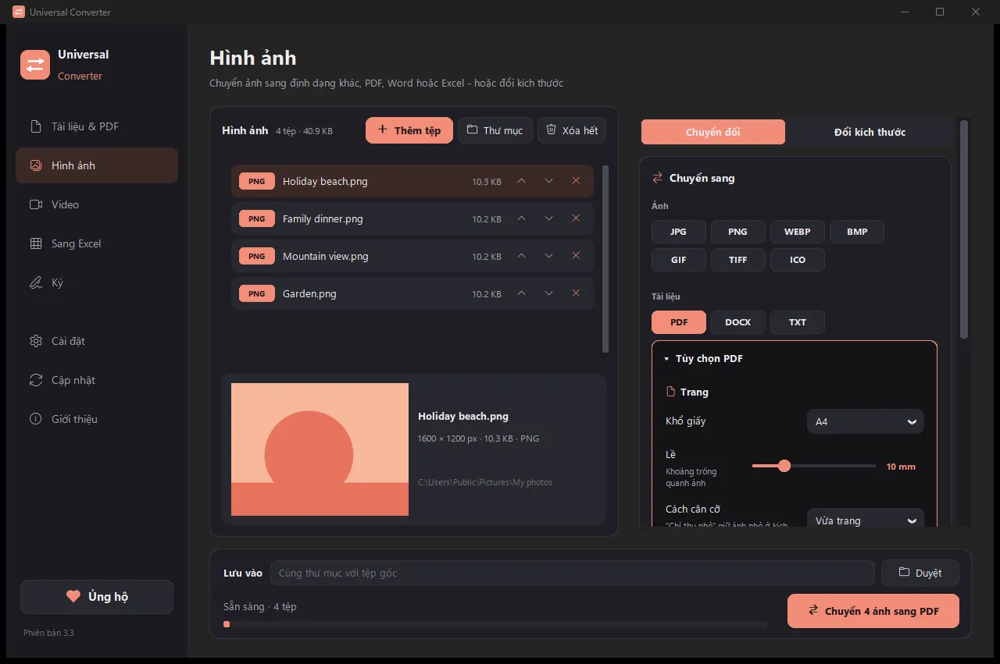

Sao chép chữ từ ảnh (OCR)
Nhận dạng chữ (OCR) chạy ngay trên thiết bị của bạn. Các ngôn ngữ dùng chữ Latinh và tiếng Hy Lạp được nhận dạng tự động (chữ Kirin cũng vậy trên Windows, Mac và Linux); các bảng chữ cái khác được tải một lần, vào lần đầu bạn chọn chúng. Chữ tiếng Việt chưa nhận dạng được: các mô hình ngoại tuyến hiện có chưa đọc đúng các dấu.
Cách cài đặt và cập nhật
- Mở tệp .dmg đã tải và kéo Universal Converter vào Applications.
- Mở ứng dụng. Lần đầu, macOS chặn ứng dụng vì nó không được Apple ký: nhấp Xong.
- Mở Cài đặt hệ thống > Quyền riêng tư & Bảo mật, cuộn xuống, nhấp Vẫn mở và nhập mật khẩu. Bạn chỉ cần làm việc này một lần.
Cập nhật: nếu bạn cho phép khi mở ứng dụng lần đầu, ứng dụng sẽ kiểm tra phiên bản mới mỗi lần khởi động, xác minh chữ ký số và cài đặt khi bạn chọn.
Cách cài đặt và cập nhật
- Chạm Tải về cho Android trên điện thoại.
- Mở tệp đã tải. Nếu Android hỏi, hãy cho phép trình duyệt hoặc trình quản lý tệp cài đặt ứng dụng.
- Chạm Cài đặt.
Cập nhật: khi bạn mở ứng dụng, ứng dụng kiểm tra phiên bản mới và báo cho bạn khi đã sẵn sàng. Tải về theo cách tương tự và cài đè lên bản cũ; cài đặt của bạn vẫn được giữ.
Cách cài đặt và cập nhật
- Tải tệp .AppImage về.
- Cho phép chạy tệp: nhấp chuột phải, mở Properties > Permissions và cho phép chạy như một chương trình (hoặc trong terminal: chmod +x Universal-Converter-*.AppImage).
- Nhấp đúp vào tệp. Không cần cài đặt gì: ứng dụng chính là một tệp này.
Cập nhật: nếu bạn cho phép khi mở lần đầu, mỗi lần khởi động ứng dụng sẽ kiểm tra phiên bản mới, xác minh chữ ký số và thay thế tệp AppImage ngay tại chỗ.
Cách thực hiện
- Mở Universal Converter.
- Kéo tệp hoặc cả thư mục vào cửa sổ, hoặc nhấp Thêm tệp.
- Chọn TXT hoặc DOCX ở mục Chuyển sang.
- Nhấp Chuyển đổi. Tệp mới được lưu cạnh tệp gốc, hoặc vào thư mục bạn chọn.

Vì sao nên làm ngoại tuyến?
Universal Converter xử lý mọi việc ngay trên thiết bị của bạn. Tệp của bạn được giữ riêng tư, tệp lớn cũng không thành vấn đề, và ứng dụng hoạt động cả khi không có internet.
Những việc khác ứng dụng làm được
- Chuyển PDF sang Word
- Chuyển tài liệu Word sang PDF
- Gộp nhiều tệp thành một PDF
- Nén PDF đến dung lượng bạn chọn
- Nén PDF xuống 100 KB, 200 KB hoặc bất kỳ dung lượng nào biểu mẫu trực tuyến yêu cầu
- Chuyển trang PDF thành ảnh JPG
- Biến tài liệu quét thành tệp Word chỉnh sửa được
- Chuyển đổi ảnh giữa JPG, PNG, WEBP và nhiều định dạng khác
- Đổi kích thước ảnh hoặc giảm xuống một dung lượng nhất định
- Đổi kích thước ảnh hoặc chữ ký thành 20 KB, 50 KB hoặc đúng số điểm ảnh
- Gộp ảnh thành một PDF
- JPG sang PDF dưới 100 KB
- Nén video mà không cần tải lên
- Chuyển đổi video giữa MP4, MKV, WebM, MOV và AVI
- Lưu âm thanh của video thành MP3
- Tạo GIF từ video
- Lấy bảng từ PDF sang Excel
- Chuyển sao kê ngân hàng PDF sang Excel
- Trích bảng từ hóa đơn PDF sang Excel
- Ký PDF
- Điền biểu mẫu PDF